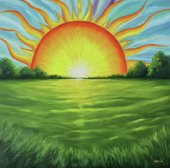
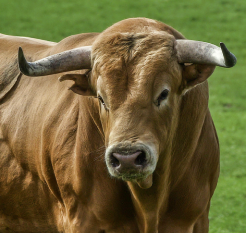
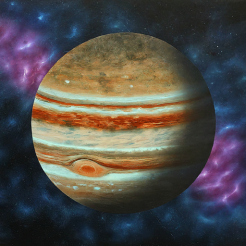
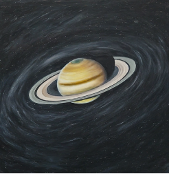
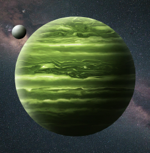
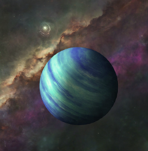
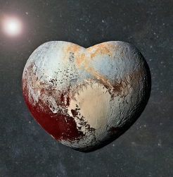

*Hover to see who has these Taurus Placements*
Individuals with Sun in Taurus are known for their reliability, patience, and love of luxury. They appreciate the finer things in life.

The Moon in Taurus indicates a stable and comforting emotional nature. These individuals value security and enjoy the pleasures of life.


Mercury in Taurus reflects a practical and grounded communication style. These individuals think carefully before expressing their thoughts.

Those with Venus in Taurus are known for their romantic nature and appreciation for beauty. They value stability and loyalty in relationships.


Mars in Taurus signifies a determined and persistent approach to achieving goals. These individuals are hardworking and practical.

Jupiter in Taurus encourages a love for material comforts and a desire for abundance. These individuals often attract prosperity.

Individuals with Saturn in Taurus learn lessons about patience and perseverance. They strive for stability in their ambitions.

Uranus in Taurus signifies a desire for change and innovation in the material world. These individuals can be quite resourceful.

With Neptune in Taurus, individuals may have a strong desire to manifest their dreams in tangible forms. They seek beauty and harmony.

Pluto in Taurus brings transformative energy, encouraging individuals to reassess their values and attachments to material possessions.

Individuals with Taurus Rising present themselves as stable and grounded. They often have a calming presence and appreciate beauty.